초기화

메인화면00
메인화면01
메인화면02
메인화면03
메인화면04
메인화면05
메인화면06
메인화면07
메인화면10
메인화면11
메인화면12
메인화면13
메인화면14
메인화면15
메인화면16
메인화면17
캐비넷00
캐비넷01
캐비넷02
캐비넷03
캐비넷04
캐비넷05
캐비넷06
캐비넷07
캐비넷10
캐비넷11
캐비넷12
캐비넷13
캐비넷14
캐비넷15
캐비넷16
캐비넷17
캐비넷20
캐비넷21
캐비넷22
캐비넷23
캐비넷24
캐비넷25
캐비넷26
캐비넷27
꿀단지00
꿀단지01
꿀단지02
꿀단지03
꿀단지04
꿀단지05
꿀단지06
꿀단지07
꿀단지10
꿀단지11
꿀단지12
꿀단지13
꿀단지14
꿀단지15
꿀단지16
꿀단지17
꿀단지20
꿀단지21
꿀단지22
꿀단지23
꿀단지24
꿀단지25
꿀단지26
꿀단지27
캐비넷
즐겨찾기
관리자
공원
용
꿀단지